地政学
深圳は香港と向き合う特区として、国境管理、金融、港湾、技術政策を結びつけます。中国本土の制度実験と国際市場が接する場所であり、粤港澳大湾区の統合構想の中で、広州、香港、東莞をつなぐ緊張と連携を抱えます。

🇨🇳 中国 / アジア / World City Atlas
改革開放の実験地から、テック企業、電子部品市場、港湾、金融、移民労働、香港との境界を抱える中国南部の高密度な革新都市へ変わった場所です。
都市の骨格
深圳は短い時間で漁村と県境の町から巨大都市へ変化しました。高層ビルと工場、部品市場と研究所、城中村と湾岸公園が近接し、成長の機会と生活の圧力を同じ街路に見せます。
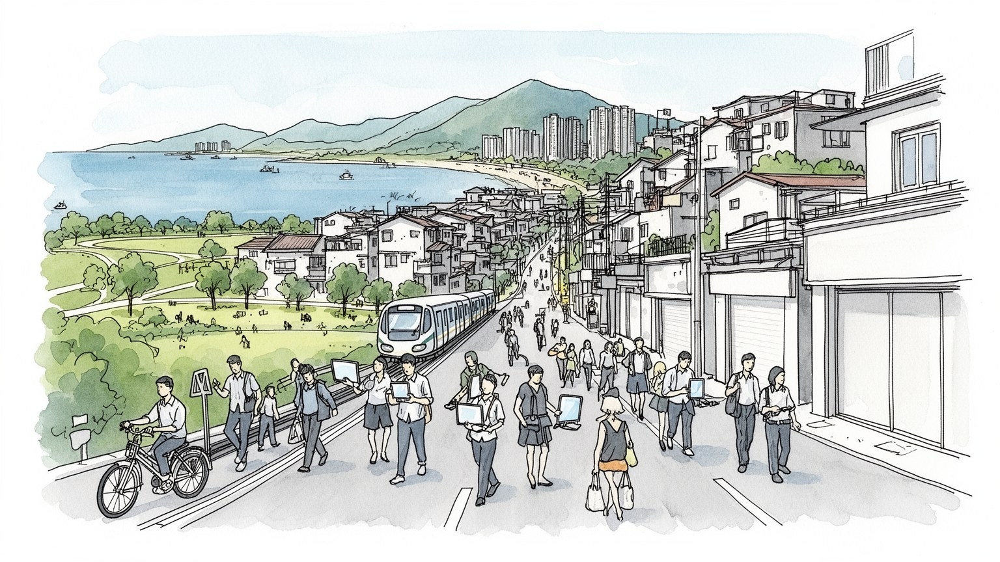
深圳は香港と向き合う特区として、国境管理、金融、港湾、技術政策を結びつけます。中国本土の制度実験と国際市場が接する場所であり、粤港澳大湾区の統合構想の中で、広州、香港、東莞をつなぐ緊張と連携を抱えます。
電子機器、通信、電気自動車、ドローン、金融、物流、越境ECが雇用を広げます。華強北の小口調達から大企業の研究開発まで距離が近く、若い移民労働者、技術者、起業家が同じ都市の速度を支えます。技能差も見えます。
深圳の文化は古い地方色より、移住者の言葉、職場、学校、創意園区、公園の使い方から生まれます。寺院や教会、祖先祭祀、香港由来の大衆文化も点在し、人々が新しい都市感覚を作り続けます。広場や夜市も舞台です。
訪問者は湾岸公園、華強北、南頭古城、デザイン街区、香港境界の駅を巡ります。住民には高い家賃、長い通勤、教育競争、蒸し暑さ、台風、職場の変化が条件であり、新しさは生活費の重さも伴います。海辺も憩いです。
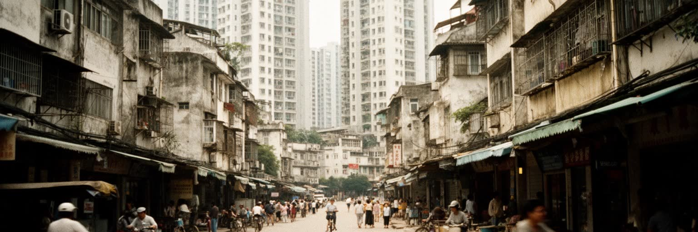
深圳を理解する出発点は、改革開放の実験地として与えられた例外性です。香港に接する小さな県境の町は、外資、輸出加工、土地制度、労働移動、行政手続きの試行を受け入れ、計画経済から市場へ向かう中国の変化を可視化しました。古い漁村や農地の上に道路、工場、寮、港、税関、ホテル、展示施設が急ぎ足で置かれ、速度そのものが都市のアイデンティティになりました。特区の記憶は記念碑だけではなく、出稼ぎで来た人の履歴、村の集団所有地、初期の外資工場、国境を越えて買い物や情報が動いた経験に残ります。成功物語は強いですが、同時に都市化で失われた集落、低賃金労働、戸籍の壁、建設の危険もありました。深圳の近代性は自然に生まれたものではなく、制度の緩み、国家の意志、香港との近さ、労働者の移動が重なって成立しました。いまの高層街区を見ると、初期の粗い実験は見えにくいです。しかし都市の速さへの信仰、挑戦を肯定する空気、古いものをためらわず更新する姿勢は、特区の歴史から続いています。深圳の記憶を読むことは、中国の成長がどのように人の移動と制度の試行に依存したかを読むことでもあります。国境のフェンス、最初期の工業団地、村民が土地を貸して得た収入、若者が夜行列車で到着した駅の記憶は、都市が国家政策だけでなく無数の生活判断で作られたことを示しています。古い写真を見返す行為も、現在の速さを測る物差しになります。
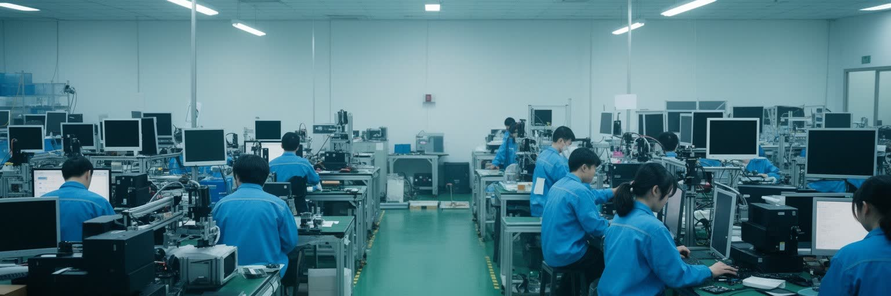
深圳の産業を特別にしているのは、研究開発、部品調達、試作、金型、量産、物流、販売が同じ都市圏の短い距離に収まる点です。通信機器、スマートフォン、電気自動車、蓄電池、ドローン、医療機器、センサー、家電、ソフトウェア企業が集まり、アイデアを素早く製品へ変える供給網を作っています。大企業の本社や研究所は国際競争の顔ですが、その背後には部品商、設計会社、検査工場、配送業者、工員、設備技術者、営業担当がいます。深圳の強みは単なる低賃金ではなく、問題が起きたときに工場へ行き、部品を探し、仕様を変え、翌日に試作品を作れる密度にあります。一方で産業の高度化は労働市場を二分します。高収入のエンジニアや金融人材が増えるほど、単純作業、清掃、飲食、配達、警備の賃金と住まいの差が目立ちます。輸出規制、知的財産、米中対立、国内需要の変化も、企業の計画と個人の将来を揺らします。深圳をテック都市として読むには、きれいな本社ビルだけでなく、夜の工場食堂、修理机、求人広告、部品倉庫、試作に追われる小企業を見る必要があります。革新はスローガンではなく、失敗した基板や納期の圧力の中で組み立てられています。大学、職業学校、投資家、展示会、海外販売チームもこの循環に加わり、製造の現場知とデジタル市場が近いことが、深圳の更新速度をさらに高めています。小さな改善が積み重なり、大きな産業の変化になります。
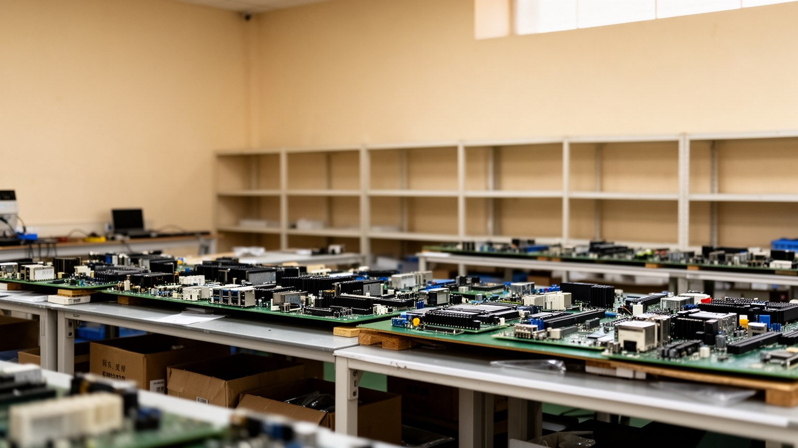
華強北は深圳の都市性を最も濃く見せる場所の一つです。ビルの各階に電子部品、スマートフォン部材、ケーブル、センサー、基板、工具、修理部品、完成品が並び、買い手はサンプルを手に取りながら価格、在庫、互換性、納期を確かめます。ここは単なる商店街ではなく、小さな発明、修理、模倣、改良、越境販売を支える知識の市場です。エンジニアは必要な部品を探し、商人は工場と客の間をつなぎ、修理人は壊れた機器を分解して流通の裏側を知ります。公式な研究所では見えない実用の知恵が、狭いカウンターと倉庫の間を行き来します。もちろん市場は変化しています。スマートフォン産業の成熟、オンライン販売、家賃上昇、規制強化、知財管理の厳格化により、かつての雑多な勢いは整理されつつあります。それでも華強北が重要なのは、製品が抽象的な技術ではなく、手で持てる部品、交渉できる価格、今日中に送れる荷物として現れるからです。深圳を歩く訪問者にとって、ここは中国製造業のスピードを体感できる窓になります。働く人にとっては、薄い利益、在庫リスク、長い営業時間、客との信用が日常の条件です。市場の棚を読むことは、世界の電子機器がどれほど多くの小さな取引で成り立っているかを読むことでもあります。階段裏の配送票や修理机の工具にも、都市の発明精神が宿っています。小口の相談が次の製品企画へつながることも多いです。
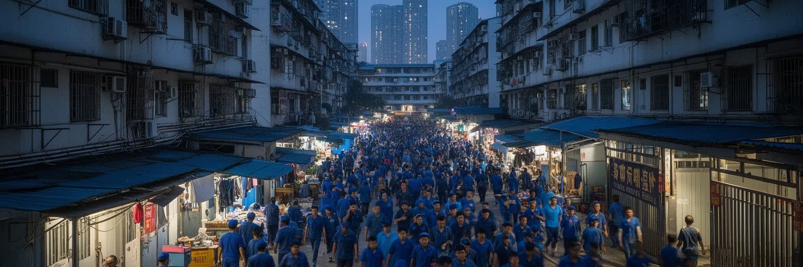
深圳は中国でも特に移民性の強い都市です。多くの住民は内陸の農村や地方都市から仕事を求めて来た人々で、工場、建設、飲食、配達、清掃、警備、販売、事務、研究開発、金融に分かれて都市を動かしています。若い労働力が大量に流入したことが、深圳の成長を可能にしました。ですが移民であることは、都市への参加が簡単であることを意味しません。戸籍、社会保険、子どもの学校、医療、住宅契約、親の介護、帰省費用が、生活の選択を制限します。工場の寮に住む人、城中村で同郷者と部屋を借りる人、郊外から長く通勤する人、専門職として定着を目指す人では、同じ深圳でも見える都市が違います。働く機会は多いが、仕事の変化も速く、景気や技術更新で職場が突然変わることもあります。移民労働を読むには、壮大な高層ビルではなく、朝の地下鉄、夜の食堂、求人ポスター、スマートフォンで家族と話す姿、送金の計算を見る必要があります。深圳は故郷を離れた人に上昇の希望を与えた一方、都市に根を下ろすための費用を重くしました。移民の都市であることは、出身地の違いを越えて新しい共同性を作れる強みであり、同時に制度的な包摂を問う課題でもあります。週末の公園、フットサル、同郷会、職場の寮の食堂は、孤独を和らげる小さな社会であり、都市が人を使い捨てにしないための大切な場でもあります。帰省列車の季節には、都市と故郷の距離がはっきり見えます。
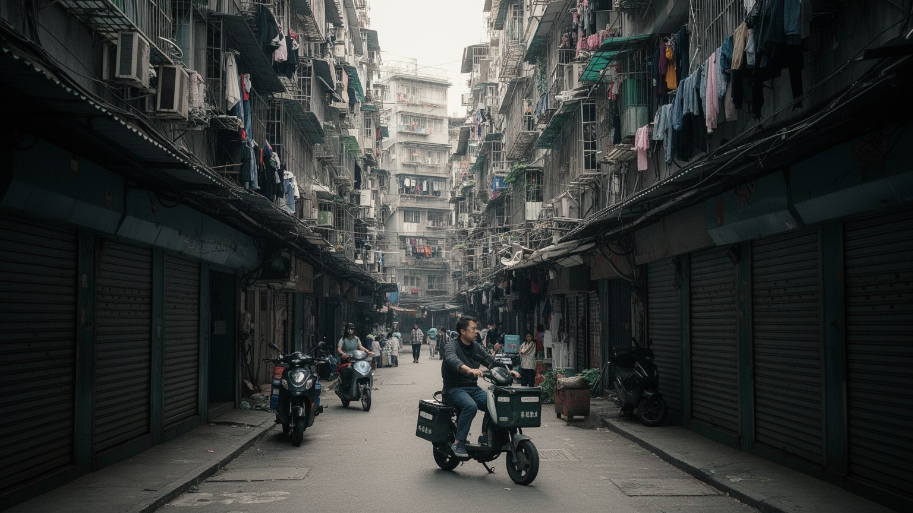
深圳の城中村は、急成長した都市の矛盾を最も近くで見せる空間です。もともとの村落が高層市街地に囲まれ、細い路地、密集した賃貸住宅、小さな食堂、洗濯物、修理店、荷物置き場、夜市、民宿、若い会社員の部屋が重なります。外から見ると雑然としていても、ここは高い家賃の深圳で働くための入口でした。都心や工場に近く、保証金が比較的軽く、同郷者や友人の紹介で住まいを見つけやすいです。低賃金のサービス職、若い技術者、起業初期の人、学生、配達員が、同じ路地で生活することも珍しくありません。問題も多いです。採光、消防、衛生、過密、治安、騒音、権利関係の複雑さは住民の不安を生みます。再開発は安全で新しい住宅や公共施設をもたらす可能性がありますが、家賃を上げ、最も都市に近い低価格の住まいを消す危険もあります。深圳の都市政策を読むには、城中村を単なる遅れた空間として排除するのではなく、どのような人がそこに住み、どの距離で働き、どの店に頼り、どの制度から外れているのかを見る必要があります。きれいな街並みだけでは、都市の包摂は測れません。城中村は深圳の成長が必要とした労働力を受け止めた場所であり、これからの再生が誰の生活を残すのかを問う場所でもあります。路地の小さな店は、安い食事、荷物受け取り、職探しの情報、夜の安心を支える生活インフラでもあります。狭い階段や共同の廊下にも、都市へ入るための現実が残ります。
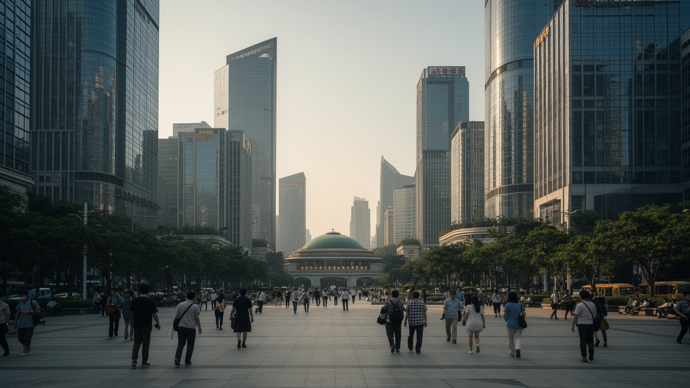
福田中心区は、深圳が製造都市だけでなく金融都市でもあることを示す舞台です。市民中心、超高層ビル、ホテル、ショッピングモール、地下鉄駅、証券取引所、銀行、保険、投資会社、法律事務所が集まり、国家の政策、民間企業の成長、資本市場の期待が重なります。深圳証券取引所は新興企業や成長企業の資金調達を象徴し、テック企業の評価、規制、投資家心理を都市の景気に結びつけます。金融の存在は雇用を広げ、専門職、会計、監査、コンサルティング、メディア、飲食、住宅需要を生みます。一方で金融化は都市の不平等も拡大します。高い給与を得る人が増えるほど、周辺の家賃、教育費、消費の基準が上がり、同じ都市で働く低賃金労働者との距離が開きます。福田の整った公共空間や高層景観は、国際都市としての自信を見せるが、通勤者の列や昼食時の店の混雑は、金融も日々の労働で成り立つことを思い出させます。深圳を金融都市として読むには、株価やビルの高さだけでなく、企業の資金繰り、起業家の失敗、規制変更、若い専門職の長時間労働を見る必要があります。資本は製造業の更新を助けるが、短期的な期待は企業と家計を不安定にすることもあります。福田は都市の成功を可視化する中心であり、その成功がどれだけ広く生活の安定へつながるかを問う場所でもあります。夜のビル明かりは野心を映すが、翌朝の地下鉄はその野心を支える労働の幅を映しています。
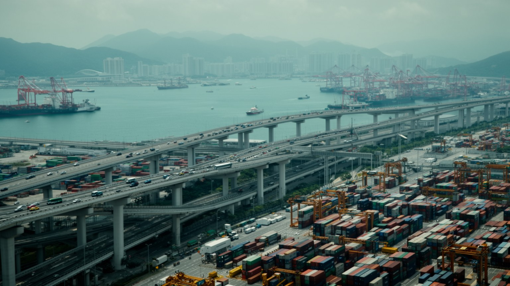
深圳の地理的な特別さは、香港と接し、港湾を通じて世界とつながる点にあります。羅湖、福田、深圳湾、皇崗などの口岸は、人、資本、商品、情報が制度の境界を越える場所であり、日常の通勤、買い物、商談、家族訪問、物流に深く関わります。香港は国際金融、法務、航空、教育、文化の窓であり、深圳は製造、研究開発、住宅、広い労働市場を持ちます。二つの都市は近いが、通貨、法制度、言論空間、教育制度、通関手続きが異なり、その違いが機会にも摩擦にもなります。港湾ではコンテナ、越境EC、小口貨物、部品、完成品が動き、塩田や蛇口の物流は深圳の工場と世界市場を結びます。境界の都市を読むには、橋やゲートだけでなく、通関の待ち時間、許可証、保険、為替、検査、運転手、倉庫労働を見なければなりません。政治的な緊張が高まれば、人の往来や企業の判断にも影響が出ます。逆に大湾区の統合が進めば、交通や研究協力は便利になりますが、制度差をどう扱うかが重要になります。深圳は香港をまねるだけではなく、香港との距離を利用して自分の産業を作ってきました。港と境界は都市の外向きの力を支えると同時に、国家、地域、市民生活の境目を毎日意識させる装置でもあります。週末の往来、越境通学、香港で働く人の生活リズム、港で夜通し続く荷役は、境界が線ではなく生活時間であることを示します。買い物袋や通勤鞄にも、二つの制度の距離が刻まれています。
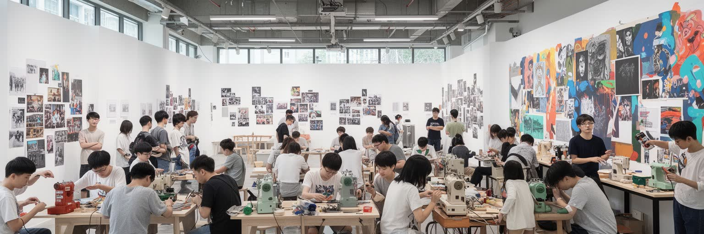
深圳は歴史の浅い都市と見られがちですが、その文化は不足ではなく、移住者が作る新しさとして捉える必要があります。出身地の異なる人々が集まったため、方言、飲茶、夜市、祭礼、音楽、仕事観は混ざり合い、固定した地方色よりも柔らかい都市文化を生みました。華僑城の創意園区、南頭古城の再生、デザイン展示、書店、ライブハウス、ローカルメディア、公共図書館、公園、海辺の散歩道は、製造都市のイメージに文化と余暇の層を加えています。深圳のデザインは、きれいな消費空間だけでなく、製品開発、工業設計、建築、公共サイン、サービス設計、展示会と結びつきます。工場跡を改修した街区では、カフェ、ギャラリー、音楽イベントが生まれる一方、家賃上昇で小さな作り手が残りにくくなることもあります。文化政策は都市のブランドを高めるが、生活に根ざした文化は職場の同僚関係、子どもの学校、夜の広場舞、週末のバスケや山歩き、寺院や教会、地元市場にもあります。深圳を文化都市として読むには、古都のような長い王朝史を探すより、急速な移動の中で人々がどのように帰属感を作るかを見ることが大切です。新しい街であることは、記憶がないことではありません。来た人が住み、働き、子を育て、趣味の場を持つことで、深圳の文化は毎年厚くなっています。図書館で勉強する若者や、海辺で写真を撮る家族も、都市の文化を日常の形で積み上げています。創意園区の展示と路地の食堂は、別々の階層の文化ではなく同じ移民都市の表情です。
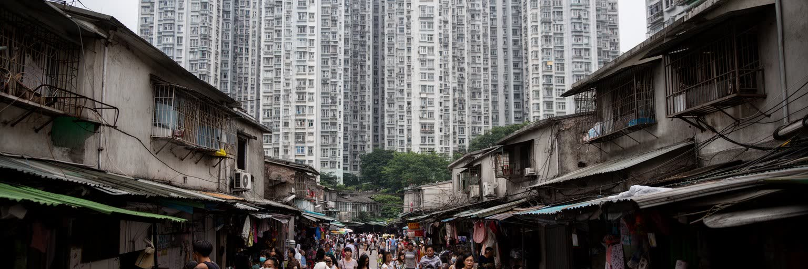
深圳の生活で最も重い課題の一つが住宅です。土地が限られ、人口流入が続き、金融とテック産業の高収入層が増えたことで、住宅価格と家賃は多くの若い住民にとって大きな負担になりました。都市は機会に満ちていますが、中心部に近い住まいは高く、遠い郊外に移れば通勤時間が伸びます。結婚、出産、子どもの学校、親の呼び寄せ、起業のリスクは、すべて住居費と結びつきます。公的住宅や人材住宅の整備は進むが、誰が入居できるか、どの地区にあるか、職場や学校へどう通うかが生活の質を左右します。城中村は安い住まいを提供してきたが、再開発で供給が減れば、低賃金労働者や若い移民の選択肢は狭まります。住宅圧力は単に個人の家計問題ではありません。企業が人材を引きつけられるか、配達員や介護職や飲食店員が都市に残れるか、子どもが安定して学校に通えるかに関わります。深圳を読むには、豪華なマンション広告と同時に、相部屋、長い通勤、家賃更新の不安、住宅購入のための親族支援を見る必要があります。上昇の希望を掲げる都市で、住む場所を持てない不安が広がれば、革新の土台も弱くなります。住宅政策は深圳の競争力を支える社会インフラであり、都市が誰のために開かれているかを示す尺度です。住宅費が可処分所得を奪うと、文化、子育て、学び直し、起業への余裕も縮み、都市の若さそのものが疲弊しやすくなります。
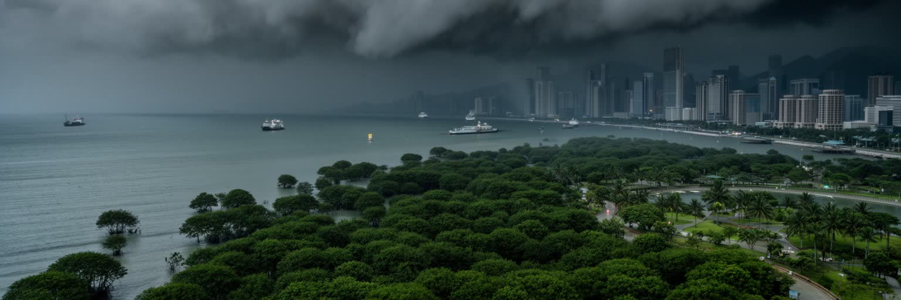
深圳は亜熱帯の湾岸都市であり、温暖な冬、蒸し暑い長い夏、強い雨、台風、高潮の影響を受けます。海辺の公園、ランニングコース、マングローブ、山地、湾岸の高層住宅は魅力的な景観を作りますが、低地の開発、地下鉄、地下商業施設、港湾、道路は水害と熱への備えを必要とします。豪雨が降れば排水能力が試され、台風が近づけば港湾作業、通勤、学校、観光、建設現場、物流が止まります。暑さは屋外労働者、配達員、高齢者、子どもに強く影響し、冷房需要は電力と家計を圧迫します。緑地や海風は都市を涼しくするが、建物の密度や舗装が熱をためれば、地域ごとの差は大きくなります。深圳の環境政策を読むには、美しい海岸線だけでなく、排水溝、ポンプ場、避難情報、日陰の歩道、職場の休憩制度、古い住宅の断熱を見る必要があります。気候リスクは高層ビルの所有者より、密集住宅に住む人や外で働く人に重く届くことが多いです。海岸の再開発は余暇の空間を広げる一方、生態系と防災をどう両立させるかを問います。深圳の未来の競争力は、速い建設と産業更新だけでなく、水辺の弱さを前提にして、暑さと雨に耐える日常のインフラをどれだけ整えられるかにかかっています。気候への適応は環境部門だけの仕事ではなく、住宅、交通、労働安全、教育、観光を横断する都市経営の焦点です。雨上がりの歩道、電動バイクの水音、地下入口の状態にも、その備えの質が表れます。
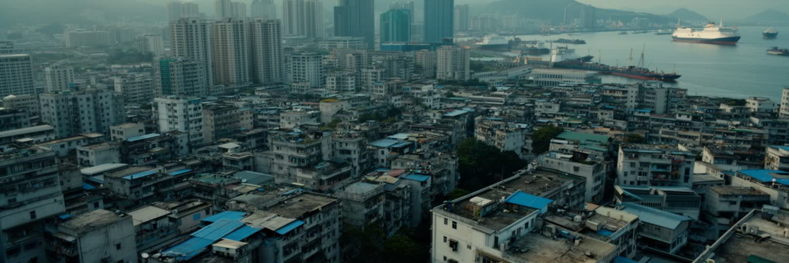
深圳を一言で革新都市と呼ぶことは簡単ですが、それだけでは都市の厚みを逃してしまいます。改革開放の制度実験、香港との境界、港湾、電子部品市場、テック企業、金融街、城中村、移民労働、湾岸公園、住宅圧力、台風への備えが同じ地図に重なることで、深圳は成り立っています。成功の物語は確かに強いです。短い時間で人口、産業、交通、教育、文化施設を増やし、多くの人に上昇の機会を与えました。しかしその速さは、長時間労働、高い家賃、制度的な不安、古い村落の再開発、若い移民の孤独、気候リスクも生みました。観光客には華強北や湾岸の夜景が印象に残りますが、住民には朝の通勤、職場の納期、子どもの学校、家賃、帰省、週末の公園、市場の匂い、サッカー観戦が都市の実感になります。深圳を読むには、未来的なスカイラインと狭い路地を同時に見る必要があります。製造と金融、国家政策と個人の移動、国境管理と国際市場、海岸の余暇と防災は、互いに切り離せません。都市の魅力は未完成であることにもあります。変わり続けるから機会が生まれ、変わり続けるから生活は不安定になります。深圳の重要性は、現代中国の成長がどれほど制度、労働、技術、境界、住まいに依存しているかを、圧縮された形で見せる点にあります。急いで変わる都市を丁寧に見るほど、成功と負担が同じ街路に並ぶ現実が見えてきます。だから深圳は未来都市である前に、移動してきた人々の生活都市でもあります。